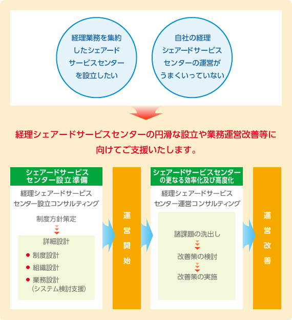
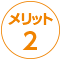
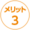
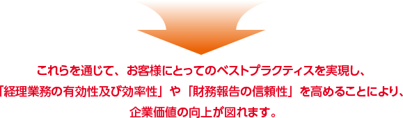

経理シェアードサービスセンターの設立・運営をご支援いたします。
サービスの詳細
経理シェアードサービスセンター設立コンサルティング
経理シェアードサービスセンターの設立に際し、お客さまにとって最適な組織形態や業務フロー等をご提案するとともに、円滑な設立に向けた準備から運用開始に至るまでをご支援いたします。
経理シェアードサービスセンター運営コンサルティング
経理シェアードサービスセンターの更なる効率化及び高度化に向け、現在運営されている経理SSCの課題の洗出しから改善案の検討・実施に至るまでをご支援いたします。


NTTビジネスアソシエが提供する経理サービスの3つの特長
NTTグループの経理シェアードサービスセンターとして培った、経理実務から業務運営に至るまでの豊富なノウハウと膨大なナレッジに基づいたサービスをご提供いたします。
NTTグループをはじめ、数多くのグループ内外のお客さまから経理業務を受託してきた豊富な業務実績に基づいたサービスをご提供いたします。
経理実務経験の豊富な充実した業務スタッフが対応いたします。
経理コンサルティング活用によるメリット
お客さまの競争優位維持等への寄与
経理コンサルタントがお客さまの問題点を速やかに把握し、迅速に問題解決を図ることにより、問題解決までにかかる時間やコスト等を最小限に抑えます。お客さまの競争優位の維持・確立に寄与いたします。

業務の効率化・精度向上
経理に関する幅広い知識と豊富な経験を有するコンサルタントが様々な成功事例等を参考にしながら、既成概念にとらわれず、お客さまに最適な業務・体制・組織等の見直しについてご提案します。それにより、業務の効率化や精度向上に向けた改革・改善が図られます。

課題解決手法等のノウハウの蓄積
経理コンサルタントが実施する問題点の可視化や整理への視点、改善に向けた検討手法等は、お客さまの様々な課題の解決に向けた手法の参考とすることができます。


サイドナビエリアはここからです。